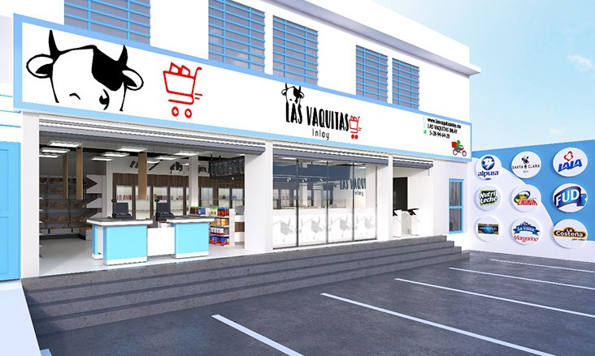
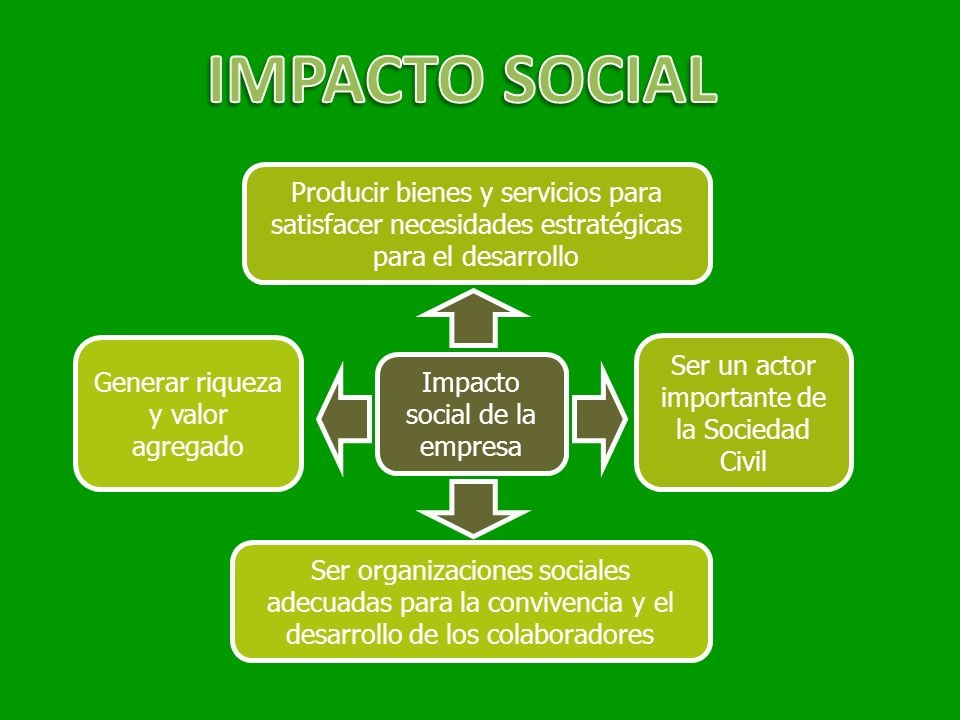

¿ Quienes somos?
Hola! bienvenidos somos vaquitas inlay una organizacion responsable encargados de llevar los productos de primera necesidad lo mas cerca posible de los clientes. Todo el personal asume total responsabilidad y compresion ante los clientes para satisfacer sus necesidades y asi estar a su disposicion.

Ofrecemos productos de cremeria, salchichoneria y abarroteria, cabe destacar que los productos son de la mas alta calidad y estamos vinculados con proovedores que cumplen con las normas necesarias en la distribucion de productos alimenticios.
Misión
Somos una Organización enfocada en ofrecer productos de cremería y abarrotería que buscamos ofrecer calidad y un buen servicio y un crecimiento para los consumidores y hacerlos sentir parte de la organización. Haciéndolo dentro de las instalaciones de las vaquitas inlay para satisfacer las necesidades de los consumidores para quienes trabajamos día día innovando y mejorando ante los cambios y promover e impulsar internamente una cultura organizacional que contribuya al bienestar de la sociedad.

visión
Ser la empresa reconocida logrando ser la mejor tienda en el ámbito de cremería y abarrotería. Mejorando el servicio para poder posicionarnos en la mente de consumidor convirtiendo la organización en la mejor opción para nuestros clientes y colaboradores.
objetivos
Ofrecemos productos de cremeria, salchichoneria y abarroteria, cabe destacar que los productos son de la mas alta calidad y estamos vinculados con proovedores que cumplen con las normas necesarias en la distribucion de productos alimenticios.
Misión
Somos una Organización enfocada en ofrecer productos de cremería y abarrotería que buscamos ofrecer calidad y un buen servicio y un crecimiento para los consumidores y hacerlos sentir parte de la organización. Haciéndolo dentro de las instalaciones de las vaquitas inlay para satisfacer las necesidades de los consumidores para quienes trabajamos día día innovando y mejorando ante los cambios y promover e impulsar internamente una cultura organizacional que contribuya al bienestar de la sociedad.
visión
Ser la empresa reconocida logrando ser la mejor tienda en el ámbito de cremería y abarrotería. Mejorando el servicio para poder posicionarnos en la mente de consumidor convirtiendo la organización en la mejor opción para nuestros clientes y colaboradores.
objetivos
Satisfacer las necesidades de los consumidores
Ofrecer siempre a los clientes una compra que supere sus expectativas.
Tener siempre un buen surtido para mayor satisfacción del cliente.
Mantener siempre un orden para mayor comodidad y acogida del cliente.
Seleccionar a los proveedores que ofrezcan un mejor financiamiento para reducir costos y ofrecer precios más bajos.
Capacitar al personal para tener satisfechos a los clientes.
Aprovechar las redes sociales para atraer más clientes.
impacto social
copyright 2020 mandanos mensaje via gmail a edithtesi423212@gmail.com